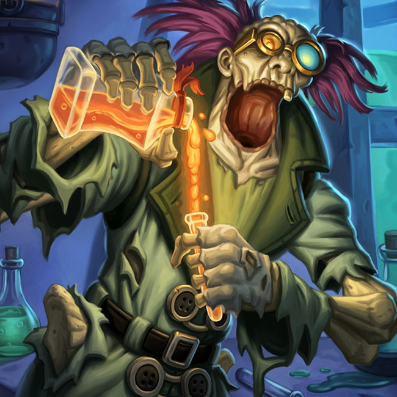

Professor Putricide
| Professor Putricide | |
|---|---|
|  | |
| Race | Undead (Reanimated)" |
| Level | ?? Boss |
| Reaction | Alliance/Horde |
| Loction | Putricide's Laboratory of Alchemical Horrors and Fun (Icecrown Citidel) |
| Status | Deceased (lore), Killable |
{kind=link}
Professor Putricide " is the "Pinacle Boss" in the Plagueworks wing of the Icecrown Citadel raid. This fight requires extremely good personal awareness, and movement/positioning.
-
1.
Abilities
- 1.1 Gas Cloud
- 1.2 Growing Ooze Puddle
- 1.3 Volatile Ooze
- 1.4 Mutated Abomination
- 1.5 Heroic Mode
-
2.
Preperation
- 2.1 Mutated Abomination
-
3.
Tactics
- 3.1 Phase 1: 100% to 80%
- 3.2 Phase 2: 80% to 35%
- 3.3 35% to 0%
- 5. Short Version
Abilities
-
Mutated Slime - Throws a vial of Mutated Slime, creating a puddle of slime at the targets location.
- Mutated Slime - Grows continuously, inflicting 4,388 to 4,612 damage every second until it is consumed by another Mutated creature.
- Unstable Experiment - Professor Putricide begins to peform a wicked experiment on you all.
-
Choking Gas Bomb - Professor Putricide throws Gas Bombs around him, the Gas Bomb deals 5,363 to 5,637
damage every seconds and explodes for 15,600 to 16,400 damage after 20 seconds.
- Choking Gas - Inflicts 4,388 to 4,612 damage and causes you to choke, reducing your chance to hit by 75% for 10 seconds.
- Create Concoction - Professor Putricide is rifling through the lab table, searching for a powerful potion.
- Guzzle Potions - Professor Putricide starts to drink every potion on the table.
- Malleable Goo - Professor Putricide bounces a Malleable ball of Green Goo at the target, inflicting 14625 to 15375 damage and slowing attack and cast speed by 200% for 15 sec.
-
Mutated Plague - Inflicts damage every 3 seconds
- During Phase 3, every 10 seconds Putricide puts one stack of this debuff on his target (= the tanks). Every 3 seconds, each Mutated Plague stack deals shadow damage to the whole raid according to the following list (10 player): 1-2 stacks ~500 dmg, 3 stacks ~1,200 dmg, 4 stacks ~2,900 dmg, 5 stacks ~7000 dmg. Each target affected by Mutated Plague deals this damage independently. Whenever a target with the debuff dies or loses his/her stack in any other way, Putricide will be healed for 300,000 per stack of debuff that target had (10 man).
Gas Cloud
-
Gaseous Bloat - 1,219 to 1281 dmg per stack, every 2 seconds, that the Gas Cloud has on the target
(25-player per stack: 1,463 to 1,537, Heroic: 1950 to 2050). The Gas Cloud initially puts 10 passive stacks
on the target and then strips away 1 stack per 2 seconds, meaning the target will take the most damage upon
initial target of the Gas Cloud. If the Gas Cloud hits you it will expunge all of the remaining Gaseous Bloat
stacks and harm all nearby allies.
- Gaseous Bloat - The Gas Cloud is fixated on the player with Gaseous Bloat. If he catches him it will cause him to cast Expunge Gas, inflicting damage to nearby players based on how bloated the player is.
- Expunged Gas - The Gas Cloud's attack has expunged all of the gas from the target! Expunged Gas inflicts damage to all enemies based on the number of Gaseous Bloat stacks that were remaining on the target when they were attacked.
Growing Ooze Puddle
- Mutated Slime - The Mutated Slime grows continuously, inflicting 4,388 to 4,612 damage every second until it is consumed by another Mutated creature.
Volatile Ooze
- Volatile Ooze Adhesive -The Volatile Ooze Adhesive bonds the target to the Volatile Ooze, inflicting 2,438 to 2,562 damage every second and rooting the target. The Volatile Ooze moves towards the target, exploding for 39,000 to 41,000 damage, split among all nearby targets
- Ooze Eruption - Inflicts 165,750 to 174,250 damage shared among nearby targets, knocking them back in all directions.
Mutated Abomination
- Eat Ooze - Eats nearby Mutated Slime decreasing the size of the pool, giving you 4 Ooze energy!
- Regurgitated Ooze - The Regurgitated Ooze has a surprising effect on the target, slowing its movement speed by 50% and dealing 6,338 to 6,662 damage every 2 seconds for 20 seconds.
- Mutated Slash - Inflicts 100% weapon damage instantly and reduces the target's resistance to physical damage by 4% for 20 sec. Stacks up to 5 times.
Heroic Mode
- Unbound Plague - Inflicts damage every 1 sec, the damage is increased every second the Blight remains on you! If you get too near to a friendly target, you will transfer the Plague from you to them.
- Plague Sickness - Increases damage taken from Unbound Plague by 250%.
- Ooze Variable - (25-player only) You have the Ooze Variable! You will be targeted with things that also have the Ooze trait and are unable to harm Gaseous creatures.
- Gas Variable - (25-player only) You have the Gas Variable! You will be targeted with things that also have the Gas trait and are unable to harm Ooze creatures.
Preparation
Editor Mode: +
test